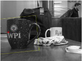
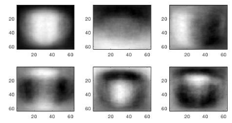

Projects
Computer Science Projects
Reusable Software Components for Multi-Robot Foraging
Foraging is a canonical problem in swarm robotics as it represents a large variety of real-world problems such as search-and-rescue. Foraging is also a building block for other swarm behaviors such as construction. One of the most difficult parts about this project was understanding how to accomplish this task with robots with very low capabilities. Each of the robots in the video below is fairly simple. They contain only a few sensors such as proximity and range-and-bearing. With no central system to determine each robot's action, the robots individually have to decide their actions. This proved to be extremely trick when a robot searches randomly out into the environment and collects food. After collecting the food, there is no GPS that the robot can use to determine how to return back to its home position. Our algorithms provide different ways to tackle these types of problems that are common to swarm robotics.
If you would like to access the source code or learn more about this project, I would love to chat with you!
Object Detection and Localization
The goal of this project was to identify and locate specific objects in a cluttered scene in real-time with MATLAB. We utilized several computer vision and machine learning techniques to accomplish this including PCA, nearest neighbors, template matching, linear SVMs, and deep neural networks. In the end, we were able to identify mugs with the WPI logo in any image with near perfect accuracy. We were able to also determine the position of the object in the scene with an error of +/- 10% using just template matching.
